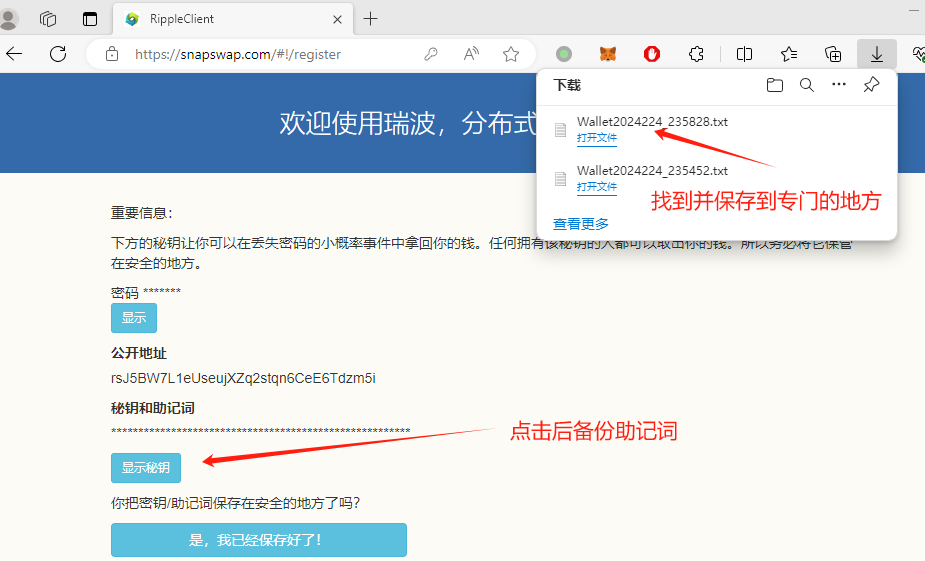
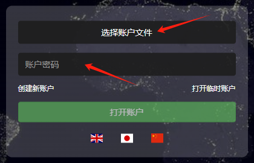
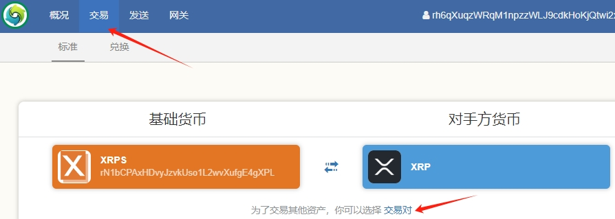
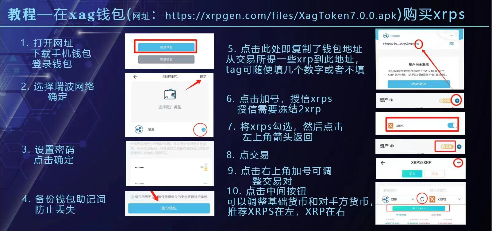

瑞波资源
瑞波目前有网页钱包，手机钱包，还有电脑钱包。这些钱包都是去中心化的，一定要自己保存好助记词。丢失无法恢复。
网页钱包：snapswap.com。由XRPS团队运营，也可通过通过xrps.io网站，点击wallet进入。
手机钱包：
- XagToken，由XAG Labs维护。仅支持安卓手机，内置Ripple和XAG双链。点击7.0 APK下载。
- 国外钱包xaman，也支持苹果手机。第一次使用时需回答问题，答案是bdcdc。
电脑钱包：
网页、XagToken、电脑钱包助记词通用。有问题可加QQ群询问社区。
网页或电脑
先选择语言。网页钱包在中间，电脑钱包在右下角，点击国旗切换成中文。
首先，我们点击“创建新账户”链接。以前没有钱包，选择第一个菜单“创建一个全新账户”。如果你有秘钥，选第二个“用密钥创建”。如果你有助记词选“用助记词创建”。

钱包会让你输入一个密码来保护你的钱包文件。此钱包文件在网页钱包中会自动下载(浏览器的“下载”选项可查看）。我们强列建议您用专门的文件夹存放并改一个好记的名字。

点击“显示密钥”，把12个汉字的助记词抄下来。同时建议把刚才生成的钱包txt文件放优盘存一份。保存好了后，就点“是，我已经保存好了”。
网页钱包出现最开始的界面，这次点击“选择账户文件”，找到保存的文件，再输入密码，就能打开刚创建好的钱包了。

网页钱包出现最开始的界面，这次点击“选择账户文件”，找到保存的文件，再输入密码，就能打开刚创建好的钱包了。
点击右上角自己的地址，然后复制下来用以激活钱包。
钱包地址为r开头，从交易所提币填写此地址，Tag（标签）可随意填写，如888或不填。
手机
XagToken是双链钱包。两条链共用同一套助记词/私钥。使用时需要注意在哪一条链上。
- 创建钱包时选择“瑞波”网络。如果已有Xrpgen钱包但无瑞波钱包，可在右上角添加瑞波钱包。
- 设置密码后并保存好助记词。
- 复制地址用来激活。
信任网关
信任网关，也可以叫做添加网关、授权网关。添加网关后，别人才可以发送对应的资产给你，也更方便送交。每添加一个网关，都会冻结2个XRP。
在网关菜单下，点击对应的资产即可添加网关。
如果不再需要此种资产，将资产卖光，然后再删除。冻结的2 XRP会解冻。
手机添加资产
XagToken在交易右边有个加号，点进去就会出现网关资产列表。添加即可。
Xaman钱包点击下图，按提示扫码然后提交。可自行在浏览器里定义资产代码与地址。
交易
瑞波自带DEX（去中心化交易所），任意资产都可以进行两两交易。交易分两种，普通交易和兑换交易。
兑换交易，直接市价成交。适用于小额多次。选择“交易”，然后点“兑换”。先选择接收哪种货币。只有信任过的网关资产，才可以兑换。
数字会变，多等一会儿更优惠。出现绿色选项后点击后确认即可完成兑换。兑换不会冻结XRP，如果你的XRP不够，就可以兑换2个XRP供普通交易使用。
普通交易
点“交易”后，在第一个区域可以点“交易对”三个字，进行资产的选择。选好后点“回到交易页面”。

交易的两种资产不能相同，如果可选择的资产不在，那么你应该先添加网关。
输入价格和数量进行买卖，提交前注意价格。下单无悔哦。

在交易界面，你可以管理自己的委托单，并看到市场上的情况。交易过程简单直接。
手机交易
XagToken直接点交易，然后右上角的+号可以选择交易对。Xaman使用xApps里的DEX Trade小程序进行交易。
交易瑞波铭文XRPS
XRPS代表着瑞波铭文，是Ripple链上首个集发行、铸造及交易于一体的协议。由一千万张瑞波铭文映射生成，总量100亿。无预留，100%全流通，非常公平、公开。
什么是铭文？铭文是指一种将数据嵌入到数字货币的交易中的区块链技术。 铭文本质上是数字标记，为区块链提供了新的实用性和灵活性。XRPS充分利用了Ripple的速度优势和低Gas费用，使得代币交易更为便捷。XRPS弥补了瑞波没有智能合约的缺陷，使瑞波生态更加完善。
作为独特的NFT，XRPS将开创瑞波的NFT交易市场，并有潜力引入多样的NFT和艺术家。未来，瑞波还将支持AMM，XRPS还将开创Ripple上的Defi时代，成为聚合交易平台上的唯一代币。曾在ETH链上流行的DeFi产品都可以使用XRPS得到重生，XRPS还会尝试推出ETH链未有的创新产品。想象一下，在XRP链上使用uniswap、opensea、dydx、curve等令人兴奋的产品，这将构建一个壮观的金融生态系统。这正是Ripple社区长期以来梦寐以求但未能触及的未来。
让瑞波更强大，从而让XRP重新伟大。让我们从交易并获得XRPS开始。
电脑交易
XagToken手机交易

Xaman手机交易
Xaman钱包点击下图，按提示扫码然后提交即可添加XRPS。然后使用xApps里的DEX Trade小程序进行交易。
交易恒星
恒星和瑞波有同一个创始人Jed。恒星的总量只有500亿出头，瑞波是1000亿。你可以在瑞波里直接交易恒星。
第一步：点“网关”菜单后，找到XLM Stellar Lumens字样。点授信，等六秒左右，就授信成功，可以去交易了。
第二步：在交易界面，点击”交易对“，选择XLM作为基础货币，CNY或XRP作为对手方货币。回到交易页面。
第三步：输入价格和数量进行买卖。
瑞波提现到恒星
点击“发送”菜单，在发送那里填入xlm@ripplefox.com

设置网络
由于瑞波节点都在美欧，中国使用有时会很卡。设置合适的节点可以让你的钱包更流畅。
点击右上角的齿轮，选择设置后可进行节点设置。一般情况下，使用默认设置即可。
- us.xrps.io，XRPS社区节点，速度快。
- xprl.ws，XRPL社区节点集群，全功能节点。如果电脑钱包有问题，可以只留这一个节点，保存后进行测试。
- s1.ripple.com，官方节点，不支持路径功能，所以发送时会出现“unknown method”错误。只适合做交易和查看历史。
技术支持
瑞波是去中心化的，一切交易以区块浏览器为准。
交易生效，无法撤销。这也意味着如果钱包被盗，无法追回。
瑞波是美国公司，基本不对社区提供支持。如果你有其他问题，欢迎到老牌的瑞狐社区进行讨论。